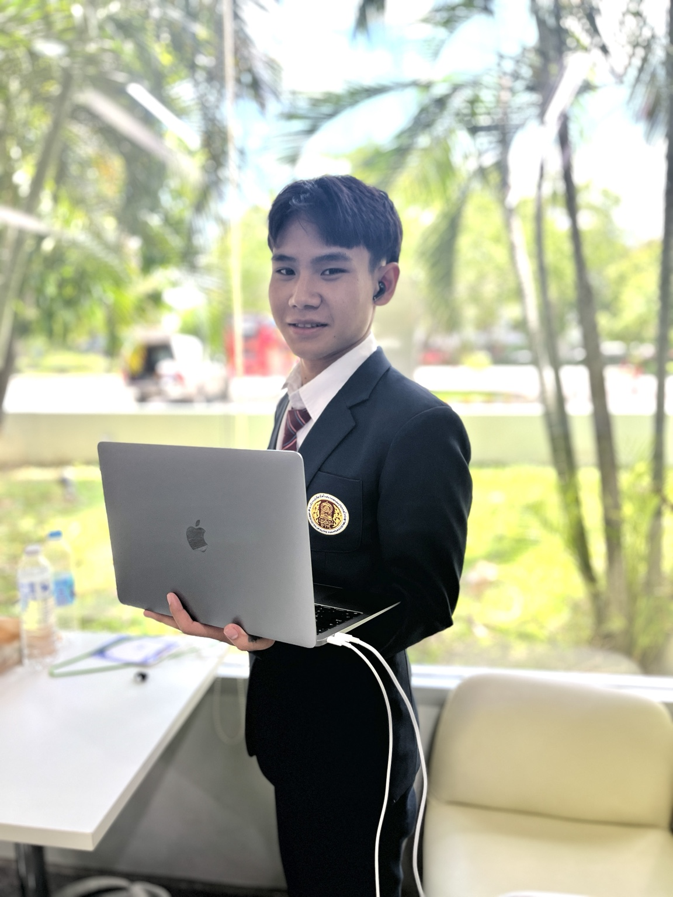
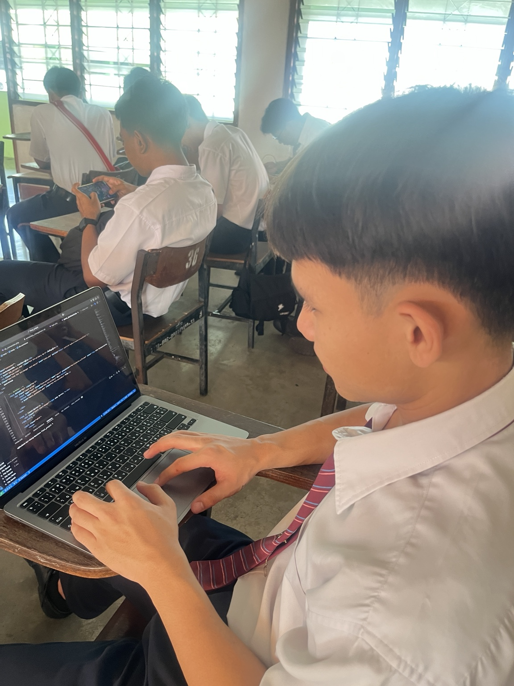
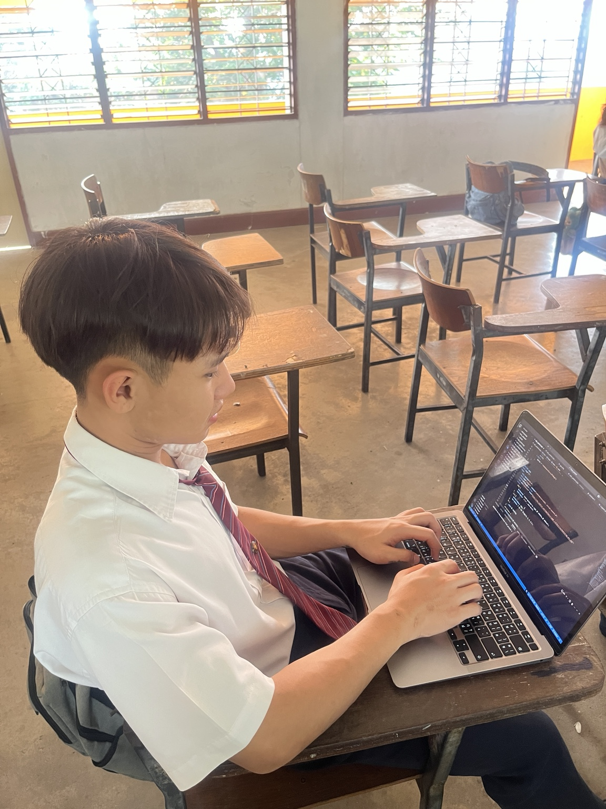
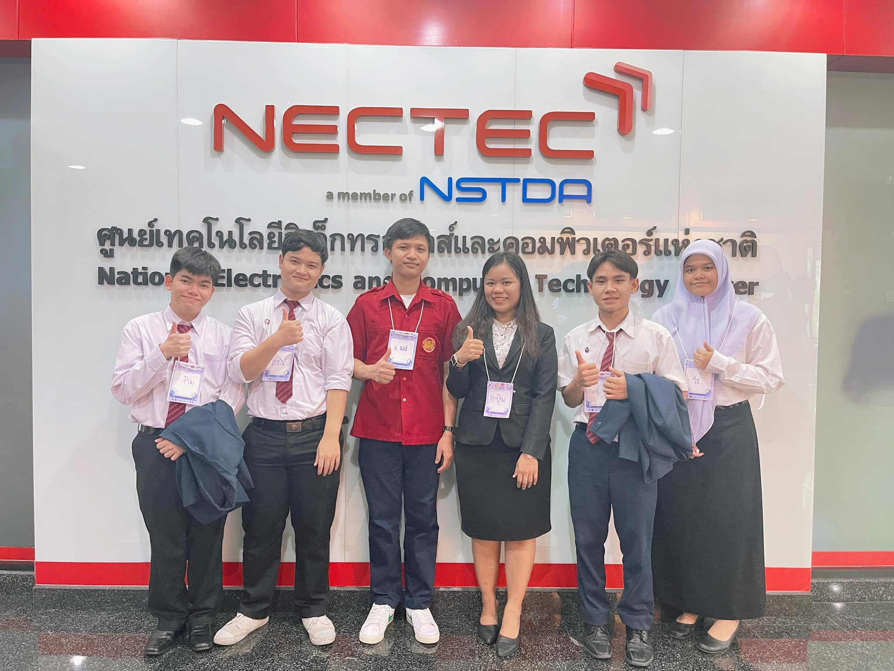
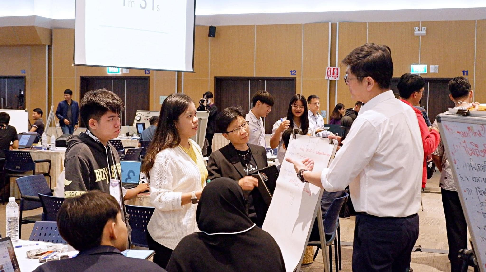

Computer Science Applicant • Future Full-stack Developer
Wanchana
Chatpongloeloed
Full-stack Developer & Startup Builder
ผมคือคนรุ่นใหม่ที่เชื่อว่าเทคโนโลยีสามารถเปลี่ยนชีวิตคนได้
ผมสนใจการพัฒนาแพลตฟอร์ม ระบบ Marketplace และระบบที่ช่วยแก้ปัญหาจริงในสังคม
เป้าหมายของผมคือการสร้างสรรค์นวัตกรรมที่เป็นประโยชน์และเข้าถึงได้

About Me
ผมชื่อ วัชนะ ฉัตรพงศ์เลอเลิศ ชื่อเล่น เอ็ม จบประกาศนียบัตรวิชาชีพ
สาขาเทคโนโลยีสารสนเทศ จากวิทยาลัยพณิชยการอินทราชัย
ผมสนใจการสร้างเว็บไซต์ แอปพลิเคชัน ระบบหลังบ้าน และแพลตฟอร์มที่ใช้งานได้จริง
ผมเริ่มจากการเรียนรู้ด้วยตัวเอง ฝึกทำโปรเจกต์ ใช้ GitHub เป็นพื้นที่เก็บผลงาน
และใช้ AI เป็นเครื่องมือช่วยพัฒนาทักษะ ผมอยากเรียนต่อสาย Computer Science
เพื่อพัฒนาตัวเองให้เป็น Full-stack Developer และสร้าง Startup ที่มี Impact ต่อสังคม
Education
วิทยาลัยพณิชยการอินทราชัย
Intrachai Commercial College
ประกาศนียบัตรวิชาชีพ (ปวช.)
สาขาเทคโนโลยีสารสนเทศ
ปีการศึกษา 2563 - 2566
GPA
3.34
Skills
HTML
CSS
JavaScript
Git & GitHub
UI/UX Design
Problem Solving
AI Tools
My Projects
ผลงานและแนวคิดระบบที่สะท้อนความสนใจด้าน Computer Science, Platform และ Startup
GPS
ระบบติดตามผู้ป่วยอัลไซเมอร์ด้วย GPS
โปรเจกต์จบระดับ ม.3 สำหรับติดตามตำแหน่งผู้ป่วยอัลไซเมอร์ด้วย GPS
แสดงผลตำแหน่งบนหน้าจอ และแจ้งเตือนผ่านแอปเมื่อผู้ป่วยเคลื่อนที่ออกนอกพื้นที่ที่กำหนด
GPSIoTNotificationHealthcare
Gusorn
Gusorn Platform
แนวคิดแพลตฟอร์มเชื่อมต่อผู้เรียนและติวเตอร์ เพื่อสร้างโอกาสทางการศึกษา
และต่อยอดเป็นระบบ Marketplace ด้านการเรียนรู้
PlatformEducationMarketplace
Portfolio
Personal Portfolio Website
เว็บไซต์แสดงตัวตน ประวัติ ผลงาน GitHub และเป้าหมายด้าน Computer Science
สร้างด้วย HTML, CSS และ JavaScript
HTMLCSSJavaScript
MVP
Mini Marketplace / Delivery MVP
แนวคิดระบบสั่งสินค้า อาหาร หรือบริการในชุมชน มีบทบาทลูกค้า ร้านค้า และแอดมิน
เพื่อฝึกการออกแบบระบบจริง
Web AppDatabaseStartup
Activities

ฝึกเขียนโปรแกรมในห้องเรียน

เรียนรู้และพัฒนาโค้ดด้วยตนเอง

เข้าร่วมกิจกรรมด้านเทคโนโลยี

Workshop / Hackathon
Awards

รองชนะเลิศอันดับ 2
การแข่งขันทักษะวิชาชีพ ทักษะการเขียนโปรแกรมคอมพิวเตอร์
ระดับ ปวช. ประจำปีการศึกษา 2566
มาตรฐานระดับเหรียญเงิน
My Vision
“ผมต้องการใช้ความรู้ด้านวิทยาการคอมพิวเตอร์เพื่อสร้างแพลตฟอร์มที่ช่วยให้คนตัวเล็ก
ธุรกิจท้องถิ่น และชุมชนสามารถเข้าถึงเทคโนโลยีได้ง่ายขึ้น”